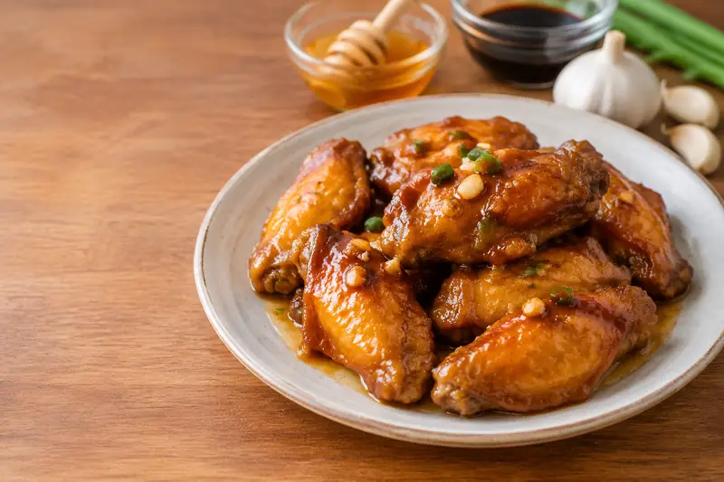

Main主菜 · Chinese home-style家常
Honey Garlic Wings蜜汁蒜香鸡翅
No deep-frying or oven needed—one skillet turns out golden chicken wings coated in a glossy honey-garlic glaze. The sweet-savory sauce comes together fast, and the key is adding enough water to simmer the wings through before reducing the honey glaze.不用油炸，也不用开烤箱，一口平底锅就能把鸡翅煎到外皮金黄、裹满亮泽蜜汁。蒜香与蜂蜜甜咸交织，关键在于加够水把鸡翅焖透后再收汁——内部彻底熟透，糖汁才不会还没熟就焦苦。

Ingredients食材
- Chicken wings鸡翅 600 g · 600 g chicken wings, split into drumettes and flats (about 12-14 pieces)鸡全翅 600 克（约 12–14 只，可分成翅根和翅中）
- Garlic大蒜 35 g · 8 cloves garlic (about 30-40 g), minced大蒜 8 瓣（约 30–40 克），切末
- Ginger姜 10 g · 3 slices, smashed3 片，拍扁
- Honey蜂蜜 42 g · 2 tbsp (30 mL)2 汤匙（30 mL）
- Soy sauce生抽 27 g · 1.5 tbsp (22 mL), divided1 汤匙半（22 mL），分次使用
- Dark soy sauce老抽 9 g · 1/2 tbsp (7.5 mL)半汤匙（7.5 mL）
- Shaoxing wine料酒(绍兴) 15 g · 1 tbsp (15 mL) Shaoxing cooking wine (or rice wine; use an unsalted culinary wine)1 汤匙（15 mL）绍兴料酒（或米酒，选无盐烹饪用酒）
- Black pepper黑胡椒 1 g · 1/2 tsp freshly ground black pepper (about 1 g)半茶匙现磨黑胡椒（约 1 克）
- Salt盐 2 g · 1/3 tsp1/3 茶匙
- Canola oil菜籽油 14 g · 1 tbsp (15 mL)1 汤匙（15 mL）
- Sesame seeds白芝麻 5 g · 1.5 tsp toasted white sesame seeds1 茶匙半熟白芝麻
- Green onions大葱/小葱 10 g · 1 stalk, finely chopped1 根，切葱花
Weights are as bought, before trimming or peeling. Costco pack sizes and availability vary; see each ingredient page.重量为买回来的原重（去皮去骨之前）。Costco 规格与有无随时变化，点食材名看详情。
Method做法
- Cut two shallow diagonal slashes across the back of each wing piece.在每块鸡翅背面斜划两刀，方便入味和出油。
- Toss the wings with the Shaoxing cooking wine, 1/2 tbsp soy sauce, salt, black pepper, smashed ginger, and one-third of the garlic, then marinate for 15 minutes.鸡翅放入碗中，加绍兴料酒、半汤匙生抽、盐、黑胡椒、拍扁的姜片和三分之一的蒜末拌匀，腌制 15 分钟。
- Stir the honey, remaining 1 tbsp soy sauce, dark soy sauce, and 1/2 cup (120 mL / 8 tbsp) water in a small bowl until combined.在小碗里把蜂蜜、剩下的 1 汤匙生抽、老抽和半杯（120 mL / 8 汤匙）清水搅匀成蜜汁。
- Lift the wings out of the marinade, remove the ginger slices, gently wipe off any garlic clinging to the wings, and pat dry with paper towels.取出腌好的鸡翅，拣出姜片，并把鸡翅表面粘着的蒜末轻轻抹掉，用厨房纸吸干表面水分。
- Heat the canola oil in a large nonstick skillet over medium heat until shimmering.大号不粘平底锅放食用油，中火烧热到油面微微波动。
- Lay the wings skin-side down in a single layer and sear over medium heat for about 5 to 6 minutes, until golden and the fat has rendered.鸡翅皮朝下平铺单层，中火煎约 5–6 分钟，至鸡皮金黄、油脂渗出。
- Flip the wings and sear the other side for 3 to 4 minutes until lightly browned.翻面再煎 3 到 4 分钟至另一面微微焦黄。
- Lower the heat to medium-low, add the remaining minced garlic, and stir for 30 seconds until fragrant without browning.转中小火，放入剩下的蒜末翻炒 30 秒至飘出蒜香但不要炒焦。
- Pour in the honey mixture, cover, and simmer over medium-low heat for 8 to 10 minutes, turning once and adding a splash of water if the pan dries, until the thickest part near the bone reaches 74°C (165°F).倒入调好的蜜汁，保持中小火加盖焖煮 8–10 分钟，中途翻面一次，如果锅底变干可淋入少许热水，直到鸡翅靠近骨头最厚处的内部温度达到 74°C。
- Uncover and cook over medium heat only until the sauce lightly coats the wings, then immediately reduce to low and toss for 30 to 60 seconds; if the sauce is still thin, remove the wings and reduce the sauce separately over medium heat before tossing the wings back in.掀开锅盖转中火，待酱汁刚能轻裹住鸡翅时立刻转小火，翻拌 30–60 秒至亮泽浓稠；若汤汁仍然偏稀，先把鸡翅夹出，用中火把锅里酱汁单独收浓后再倒回鸡翅拌匀。
- Transfer to a plate and scatter with toasted sesame seeds and chopped green onion.盛盘后撒上熟白芝麻和葱花即可享用。
Keys to success成功要点
- Patting the wings dry and wiping off marinade garlic keeps oil from splattering and prevents burnt, bitter specks during searing.下锅前吸干水分并抹掉腌料里的蒜末，既不会溅油，煎皮时蒜末也不会提前烧焦发苦。
- Simmering the wings with 1/2 cup (120 mL) water lets the meat near the bone reach a safe 74°C (165°F) before the honey sugars scorch.蜜汁里加半杯（120 mL）水先加盖焖煮，才能保证鸡骨周围达到 74°C 安全熟度，同时避免蜂蜜在鸡肉熟透前糊锅。
- Rendering the skin side first melts away excess subcutaneous fat so the wings taste savory rather than greasy.先煎鸡皮一面能逼出多余皮下脂肪，吃起来皮香不腻，锅底也自带鸡油香。
- Lower the heat as soon as the sauce starts to thicken and cling; once the water cooks off, honey burns within seconds.收汁时一旦开始变浓挂勺就立刻转小火，因为糖分收干后只需要十几秒就会发焦。
Common problems常见失败与补救
- The glaze scorched and turned bitter酱汁发黑发苦、粘在锅底
The heat was too high or the pan ran dry. Lower the heat, splash in 2 tbsp hot water to loosen, or transfer the wings to a clean pan with a fresh dab of diluted honey.火力太大或水分太少；立刻关小火，加 2 汤匙热水刮松锅底把焦味冲淡，必要时只夹出鸡翅重新调少许蜂蜜水裹匀。 - The meat near the bone is still pink表面裹好汁了，咬开骨边还是粉红
Do not judge doneness by color alone—wings must reach 74°C (165°F) at the thickest part near the bone before glazing. Add a splash of water, cover, and simmer over medium-low until a thermometer reads 74°C (165°F); next time slash the backs and sear in one layer.焖煮时间或水量不足，不能只看颜色判断；加少许热水加盖中小火继续焖煮，用温度计测至靠近骨头最厚处达到 74°C 再收汁裹酱，下次摆单层并在背面划两刀。 - The sauce stayed watery and would not cling汤汁稀薄挂不住鸡翅
The sauce needs more reduction. Lift the wings onto a plate, simmer the sauce separately over medium heat for about 1 minute until syrupy, then toss the wings back in.掀盖后收汁还不够；先把鸡翅夹到盘里，开中火把锅里汤汁单独收浓约 1 分钟至糖浆状，再倒回鸡翅拌匀即可避免鸡翅和糖汁一起焦糊。
Watch it done视频参考
Title names honey chicken wings in Chinese and labels it zero-skill cooking; about 3 minutes; about 258,000 views.标题写明「蜜汁雞翅」，标注「零廚藝料理」，约 3 分钟，约 25.8 万次观看。
Title is "Honey Garlic Chicken Wings - Best Chicken Wings Recipe", clearly this dish; about 5 minutes; about 750,000 views.标题为「Honey Garlic Chicken Wings - Best Chicken Wings Recipe」，明确是蜜汁蒜香鸡翅，约 5 分钟，约 75 万次观看。
Videos load only when you tap them (youtube-nocookie). Creators are credited; we do not host their videos.点了才加载视频（youtube-nocookie）。署名原作者，本站不托管视频。
Nutrition营养
| Energy热量 | 492 kcal |
| Protein蛋白质 | 31.6 g |
| Fat脂肪 | 29.8 g |
| of which saturated其中饱和脂肪 | 7.3 g |
| Carbohydrate碳水化合物 | 25.8 g |
| Fibre膳食纤维 | 1.2 g |
| Sodium钠 | 1565 mg |
High sodium钠偏高 Sodium tiers: under 345 mg lower, 345-689 mg moderate, 690 mg and above high (this site's tiers; 15% of the 2,300 mg daily reference = 345 mg).钠分档：低于 345 mg 较低，345–689 mg 中等，690 mg 及以上偏高（本站分档；345 mg ＝ 每日参考 2300 mg 的 15%）。
Computed from the Canadian Nutrient File (Health Canada) with the weights above; oil and sauces are counted in full. Real dishes differ.按加拿大营养素数据库和上面的重量计算；油和酱汁按全量计入，实际会略低。
Good to know适合 / 需注意
- About 31.6 g protein per serving, a protein-rich meal (adult reference intake roughly 50-60 g/day; needs vary).每份蛋白质约 31.6 g，属于蛋白质较高的一餐（成人每日参考量约 50–60 g，个体差异大）。
- About 1565 mg sodium per serving (about 68% of the 2,300 mg daily reference), on the high side; use less soy sauce or salt, and pair with unsalted sides.每份钠约 1565 mg（约占每日参考 2300 mg 的 68%），偏高；少放酱油或盐，或搭配无盐主食与蔬菜。
- About 7.3 g saturated fat per serving (daily reference about 20 g), on the high side; use a leaner cut or remove skin.每份饱和脂肪约 7.3 g（每日参考约 20 g），偏高；可换瘦肉部位或去皮。
- Contains allergens: Sesame, Soy, Wheat / gluten.含过敏原：芝麻、大豆、小麦/麸质。
Chicken wings deliver solid protein alongside higher fat from the skin and added sugar from the honey glaze. Pair with steamed greens and rice to round out the meal.鸡翅带来较高蛋白质，但鸡皮脂肪与蜂蜜糖分都不算低；搭配清炒绿叶菜和米饭分食，一餐的脂肪和碳水更均衡。